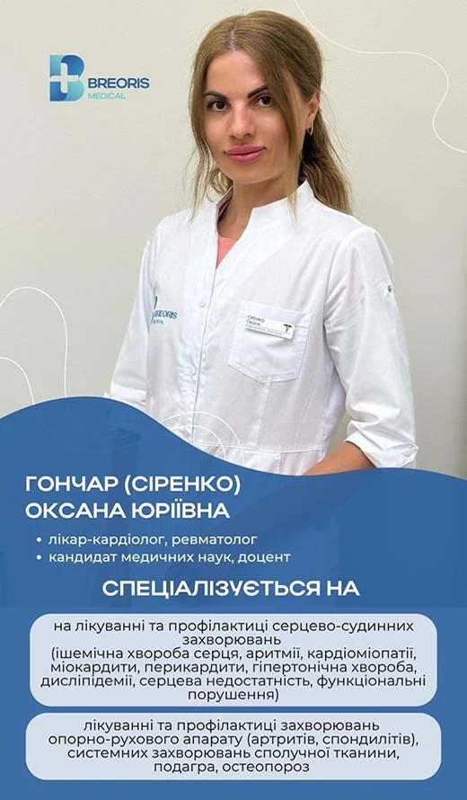

BREORIS MEDICAL · Дніпро
Сіренко Оксана Юріївна
Лікар
Кардіолог, Кардіоревматолог
Досвід роботи: 12 років
Консультаціявід 900 грн
Дніпро, вул. Української Добровольчої армії, 2-Б
Про лікаря
- Досвід роботи
- 12 років
- Спеціальність
- Кардіолог, Кардіоревматолог. Перша категорія
- Спеціалізація
- Кардіолог, Кардіоревматолог
- Стаж
- 12 років
- Освіта
- 2004–2010 — Дніпропетровська державна медична академія, спеціальність «Лікувальна справа», диплом з відзнакою; 2010–2012 — ДУ «Дніпропетровська медична академія МОЗ України», магістратура, диплом з відзнакою; 2010–2012 — КУ «Дніпропетровська міська клінічна лікарня №7», інтернатура за спеціальністю «Внутрішні хвороби»; 2015 — ДУ «Запорізька медична академія післядипломної освіти», спеціалізація «Кардіологія»; 2013–2016 — ДУ «Дніпропетровська медична академія МОЗ України», очна аспірантура. Захищена кандидатська дисертація «Субклінічний атеросклероз та ризики серцево-судинних ускладнень у хворих на артеріальну гіпертензію у поєднанні з ревматоїдним артритом»; 2020 — Київська національна академія післядипломної освіти імені П. Л. Шупика, спеціалізація «Ревматологія»
- Науковий ступінь
- Кандидат медичних наук
- Приймає
- Дорослі
Наукова діяльність
- Доцент кафедри внутрішньої медицини 2, фтизіатрії, професійних захворювань та клінічної імунології Дніпровського державного медичного університету
- Автор понад 70 наукових публікацій, зокрема 8 у базах цитування SCOPUS та Web of Science; 1 патент на винахід та 1 монографія
Професійні спільноти
- Член міжнародних та вітчизняних професійних спільнот
Курси та підвищення кваліфікації
- 16–22 вересня 2018 — семінар «Метаболізм ліпідів», OMI Weill Medical College of Cornell University
- 14–20 вересня 2019 — літня школа Європейського товариства гіпертонії (ESH), Браурон, Греція
- 8–14 жовтня 2023 — семінар «Кардіологія», OMI Weill Medical College of Cornell University
- 9–15 червня 2024 — семінар «Внутрішня медицина», OMI Weill Medical College of Cornell University
Напрямки лікування
- Ішемічна хвороба серця
- Ревматоїдний артрит
- Артроз (остеоартроз)
- Серцева недостатність
- Артеріальна гіпертензія
- Системний червоний вовчак
Послуги та вартість
- Консультативний прийомвід 900 грн
- ЕКГ
- ЕхоКГ
За даними DOC.UA від 06.10.2026. Вартість візиту підтвердить адміністратор.
Відгуки
5,0 · 5 відгуків на DOC.UA ↗Профіль лікаря: DOC.UA ↗ · Дані від 06.10.2026